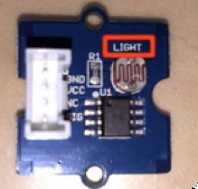

3. インテルEdisonの設定¶
インテルEdisonの準備を行います。
3.1. センサーの接続¶
Grove Kitの中から照度センサーと温度センサー、ボタン、LED、LCDを取出します。
照度センサーはこちらです。(LIGHTと書いてあります）
温度センサーはこちらです。(裏にTemperature Sensorと書いてあります)

ボタンはこちらです。(裏にButtonと書いてあります)
LEDは組み立て式となります。袋からLEDを取り出してボードに装着します。ピンが長い方が+です。+側の穴に刺します。

LCDはこちらです。
次に、Arduino互換ボードをEdisonに装着します。(Arduino互換ボードの図)
{kind=link}

Arduino互換ボードにセンサーとLED、LCDを接続します。以下のように接続してください。
| ポート | 設定 |
|---|---|
| A0 | 照度センサー |
| A1 | 温度センサー |
| D4 | ボタン |
| D8 | LED |
| I2C(I2Cのどこでも) | LCD |
3.2. シリアルポート接続¶
Edisonへ接続します。まず、Edisonにシリアルポート経由で接続します。USBケーブルでPCとEdisonを接続し、シリアルコンソールを開きます。
USBケーブルとACアダプタを図のように接続します。
ターミナルソフトでEdisonに接続してください。接続に必要な情報はこちらです。特にBaud Rateにご注意ください!
| 項目 | 値 |
|---|---|
| Port | EEdisonが接続されているUSBポート (Windowsはデバイスマネージャで、Macであれば”ls /dev/tty.usbserial-*”で確認) |
| Baud Rate | 115200 |
| Data Bits | 8 |
| Stop Bits | 1 |
| Parity | none |
Teratermをご利用の場合、メニューの[設定]-[シリアルポート]からスピードを”115200”に変更します。 MacOSをご利用の場合は、ターミナルから以下のコマンドを入力することで接続が可能です。
$ sudo screen /dev/tty.usbserial-XXXXXXX 115200
または、
$ sudo cu -s 115200 -l /dev/tty.usbserial-XXXXXXX
Password: ← MacOSのrootパスワードを入力
プロンプトが表示されれば接続成功です。loginのプロンプトで、ユーザ名 ”root”、パスワード ”Password1” でログインします。
edison login: root
Password: ******** ←パスワードを入力
root@edison1: ~#
3.3. WiFi設定¶
WiFiの設定を行います。
WiFiのSSIDとPSKが明確な場合、下記のコマンドで一括設定できます。
# wpa_passphrase __SSID__ ____PSK____ >/etc/wpa_supplicant/wpa_supplicant.conf
通常のハンズオンでは、この設定になります。(SSIDが、awshandson5、 パスワードが、awshandson)
# wpa_passphrase awshandson5 awshandson >/etc/wpa_supplicant/wpa_supplicant.conf
設定を反映させるために、リブートして下さい。
# reboot
リブート後、再度ログインして下さい。iwconfig でWiFi接続を確認します。
# iwconfig
wlan0 IEEE 802.11abgn ESSID:"awshandson5"
Mode:Managed Frequency:5.18 GHz Access Point: 8A:D7:F6:00:BA:6C
Bit Rate=135 Mb/s Tx-Power=31 dBm
...
ESSIDにSSIDが表示されていれば、OKです。
3.4. Edison環境のクリーンアップ¶
ハンズオンで利用するユーザーディレクトリのクリーンアップを行います。
# cd
# rm -rf *
# rm -rf ./.aws
# rm -f ./.profile
# rm -f ./.endpoint
# rm -f ./.region
3.5. AWS SDKの準備¶
Edison上でAWS IoTデバイスSDK、AWS SDK、その他のモジュールをインストールします。インストールには、少し時間が掛かります。
# npm install aws-iot-device-sdk
# npm install aws-sdk
# npm install argv
# npm install moment
3.6. 環境変数の設定¶
3.6.1. 参加者番号¶
参加者番号を設定します。以下の01となっている箇所を各自の参加者番号に変更して実行します。
# echo "export HandsOnNumber=01" >> .profile
# source ./.profile
3.6.2. リージョン¶
リージョンを設定します。下記のいずれかを実行してください。
3.7. ハンズオン用コード、証明書の準備¶
Edison上で以下のコマンドを実行し、本ハンズオン用に用意されているzipファイルのダウンロードと解凍を行います。
# cd
# wget https://s3-ap-northeast-1.amazonaws.com/awsiot-handson-dojo-jp/aws-iot-handson-dojo-basic.zip
# unzip -q aws-iot-handson-dojo-basic.zip
デバイス用証明書の準備を行います。解凍して作成されたaws-iot-handson-dojo-basic/certsディレクトリに移動し、OpenSSLを使ってプライベートキー(privatekey.pem)と証明書リクエスト(cert.csr)を生成します。
# cd ~/aws-iot-handson-dojo-basic/certs/
# openssl req -newkey rsa:2048 -new -nodes -keyout privatekey.pem -out cert.csr -subj "/CN=awshandson"
スクリプトの実行に必要なモジュールのインストールし、「2. AWS環境の準備」の最後でコピーしたCloudFormationのOutputに表示されたAccessKeyとSecretKeyをパラメータに指定してスクリプトを実行します。AWS IoTで証明書の作成と登録が行われます。出力される「証明書ID」をメモ帳にコピーします。次章のAWS IoTの設定の中で証明書を特定するために利用します。
# node create_cert.js -a <your access key> -s <your secret key>
certificateId: '<証明書ID>'
デバイス用証明書ファイル(cert.crt)がcertsディレクトリ内に作成されたことを確認します。
# ls
cert.csr create_cert.js get_endpoint2.js
cert.pem get_endpoint.js privatekey.pem
ルート証明書のダウンロードを行います。
# wget https://www.symantec.com/content/en/us/enterprise/verisign/roots/VeriSign-Class%203-Public-Primary-Certification-Authority-G5.pem -O rootca.crt
3.8. エンドポイントの設定¶
CloudFormationのOutputに表示されたAccessKeyとSecretKeyをパラメータに指定してスクリプトを実行します。AWS IoTのエンドポイントが取得され、~/.endpoint に書き出されます。source ~/.endpoint で、endpoint情報を環境変数に登録し、デバイス用プログラムで使用します。
# node get_endpoint2.js -a <your access key> -s <your secret key> > ~/.endpoint
# source ~/.endpoint